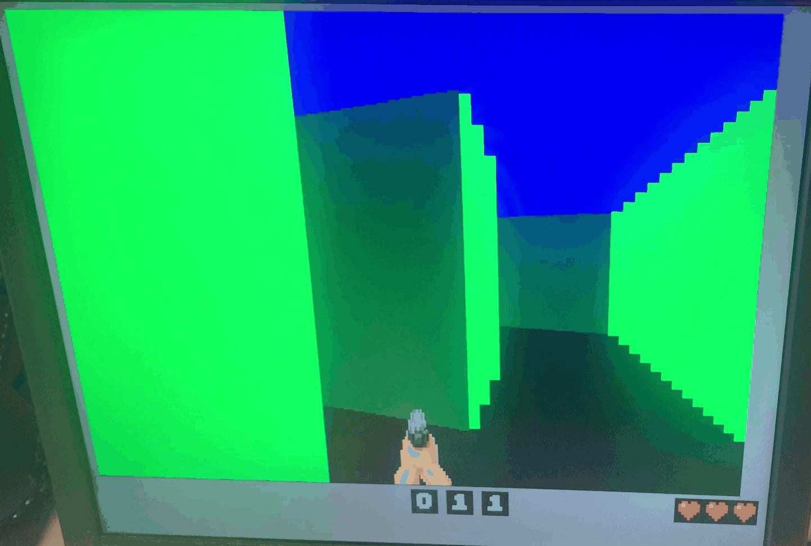
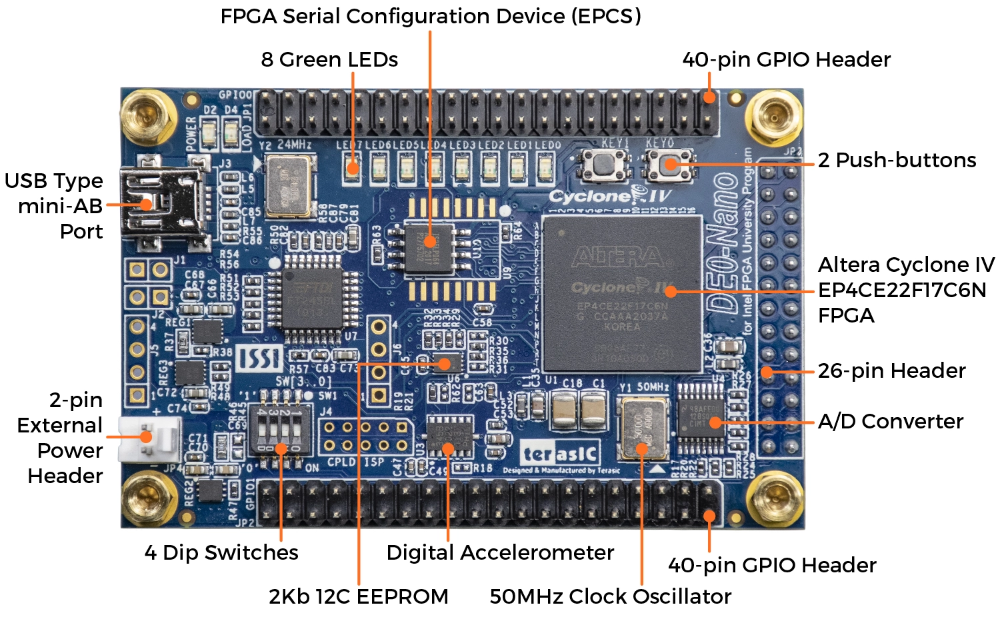

FPGA implementation of retro-like FPV (First Person View) game with 2D dynamics but with a 3D rendering using ray casting engine like in the video game Wolfenstein3D.
- Real time rendering with smooth graphics.
- Compressed RBG images for limited ROM.
- Technology Used: VHDL, Quartus, DE0-Nano (Cyclone® IV FPGA).

